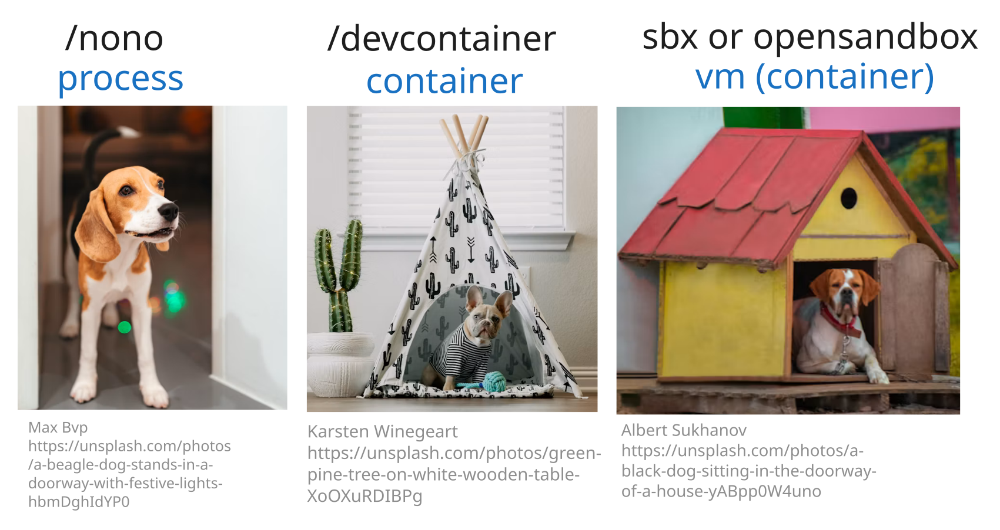

TL;DR
/nono → nono run --profile claude-mac --allow-cwd -- claude --dangerously-skip-permissions/devcontainer → devcontainer up --workspace-folder . → devcontainer exec --workspace-folder . claudebrew install docker/tap/sbx → sbx secret set anthropic → sbx run claude ~/my-projectHvorfor køre en kodeagent i en sandbox? Så du slipper for at bekymre dig om, at den sletter filer, læser dine hemmeligheder eller render amok på dit netværk. Med den tryghed i ryggen kan du lade agenten arbejde mere på egen hånd, også med --dangerously-skip-permissions.
Indlægget her dækker tre måder at trække den grænse på, hver med sit eget skadesomfang. Har du ikke en stærk præference, er min anbefaling nono før devcontainer før sbx / OpenSandbox.
nono er hurtig og arbejder ud fra globale konfigurationsprofiler. Devcontainer og sbx kræver en konfigurationsfil per projekt, men til gengæld bager de værktøjerne ind, så opsætningen er nemmere at rulle ud i en hel organisation.
Devcontainer og sbx bygger begge på Docker. sbx lægger desuden en hypervisor ovenpå, altså et ekstra lag der dækker dig, hvis agenten slipper ud. Prisen er en langsommere opstart.
Tænk på din kodeagent som en hund, der bor i dit hus:

Sikkerhedsforbehold: en sandbox isolerer kun det, der kører inde i den. Alt, hvad Claude stadig kan nå, er angrebsflade: en monteret volume, et MCP-endpoint, en aktiv credential i en env-variabel. Alle tre værktøjer begrænser skadesomfanget, men ingen af dem gør et upålideligt repo sikkert som udgangspunkt.
Hurtigt valg:
| Situation | Valg |
|---|---|
| Windows 11, individuel, minimal opsætning | sbx |
| macOS / Linux, ingen MCP-servere, lav overhead | nono |
| macOS / Linux, med MCP-servere eller hooks | sbx eller devcontainer |
| Team der vil have sandboxen håndhævet i CI og lokal dev | devcontainer |
| Upålideligt repo / maksimal isolation | sbx (klon-tilstand) |
nono er en sandbox på procesniveau: Landlock på Linux, Seatbelt på macOS. Ingen Docker og ingen VM. Den hooker direkte ind i kernen og starter derfor nærmest øjeblikkeligt. Den styrer, hvilke filsystemstier og netværksdomæner den indpakkede proces må røre. Alt andet er spærret af.
/nono-skill'en opretter en .nono-mappe for dig. Profilerne er globale, så du behøver ikke køre den i hvert eneste projekt.
Netværkspolitik: Claude Code har kun brug for udgående adgang til claude.ai og api.anthropic.com. WebSearch går også igennem dem, mens pakkeinstallationer og vilkårlige curl-kald er lukket ude. Har en session brug for rigtig internetadgang, så skift til -web-varianten, der fjerner netværksbeskyttelsen og beholder begrænsningerne på filer og kommandoer. Ellers bør du holde dig til den låste profil.
Installér skill'en, hvis du ikke allerede har gjort det:
/plugin marketplace add https://github.com/EmilMachine/skillhub
/plugin install dev-essentials
Kør derefter i dit projekt:
/nono
Det lægger en .nono/-mappe med profilskabeloner ind i dit projekt. Brug -f for at overskrive en eksisterende .nono/. Fuld reference til opsætning og brug: README_nono.md.
# macOS
brew install nolabs-ai/tap/nono
# Linux
curl -fsSL https://nono.sh/install.sh | sh
Profiler ligger i ~/.config/nono/profiles/:
mkdir -p ~/.config/nono/profiles
# macOS
cp .nono/claude-mac.jsonc ~/.config/nono/profiles/claude-mac.jsonc
# Linux
cp .nono/claude-linux.jsonc ~/.config/nono/profiles/claude-linux.jsonc
# macOS
nono run --profile claude-mac --allow-cwd -- claude --dangerously-skip-permissions
# Linux
nono run --profile claude-linux --allow-cwd -- claude --dangerously-skip-permissions
Login-fælde (engangsbesvær): sandboxen kan sjældent åbne OAuth-callback-porten. Log ind uden for nono først (almindelig claude uden wrapper), og start så sandboxen op igen.
macOS-note: dine login-credentials havner i Keychain, som sandboxen ikke kan læse. Shell-genvejen nedenfor trækker en token ud til ~/.claude/.credentials.json før hver kørsel. På Linux ligger credentials allerede der, så det trin kan du springe over.
Tilføj til ~/.bashrc / ~/.zshrc:
macOS:
nono-claude() {
security find-generic-password -a "$USER" -s "Claude Code-credentials" -w \
> ~/.claude/.credentials.json && chmod 600 ~/.claude/.credentials.json \
&& nono run --profile claude-mac --allow-cwd -- claude --dangerously-skip-permissions "$@"
}
Linux:
nono-claude() {
nono run --profile claude-linux --allow-cwd -- claude --dangerously-skip-permissions "$@"
}
Vil du have en nonoweb-claude-variant, så kopiér funktionen og skift profilen til claude-mac-web / claude-linux-web. Genindlæs med source ~/.zshrc, og derefter kan du køre nono-claude fra et vilkårligt projekt.
| ✅ Dækket | ❌ Ikke dækket |
|---|---|
| Claudes egne filværktøjer | MCP-servere startet uden for procestræet (SSE/HTTP) |
| Claudes egne bash-kommandoer | Hooks der kalder eksterne API'er direkte |
| Claudes egne netværkskald |
nono sandboxer claude-processen. Alt, den delegerer videre uden for det procestræ, kører uden begrænsninger.
Profiler er .jsonc-filer i ~/.config/nono/profiles/. Vil du justere noget for et enkelt projekt uden at røre den delte profil, så tilføj en ./.nono/local.jsonc, der udvider den. Eksemplet herunder (A) tilføjer en monteret mappe, (B) tillader et netværksdomæne og (C) installerer en værktøjsgruppe:
{
"extends": "claude-mac", // eller "claude-linux"
"filesystem": { "allow": ["$HOME/code/shared-lib"] }, // A
"network": { "allow_domain": ["internal-api.example.com"] }, // B
"groups": { "include": ["java_runtime"] } // C
}
Kør den med:
nono run --profile ./.nono/local.jsonc --allow-cwd -- claude --dangerously-skip-permissions
Andre runtime-grupper: node_runtime, python_runtime, go_runtime, rust_runtime, nix_runtime, homebrew, user_tools (en samlekasse til lokale CLI'er). Kør nono search <keyword> for at finde flere.
En devcontainer kører dine værktøjer (Python, uv, Claude Code) inde i Docker. Koden bliver liggende på hosten og monteres ind. Går miljøet i stykker, kører du docker rm -f og bygger det op igen.
Isolationsmodel: en devcontainer er en OCI-container og deler derfor host-kernen. Isolationen er stærk, men et kernel-exploit kan i teorien bryde ud af den. Det er netop afvejningen i forhold til sbx længere nede, hvor hver session får sin egen kerne.
Netværkspolitik: modsat nono har en devcontainer ingen netværksbegrænsning som standard. WebSearch, WebFetch og udgående kald virker alle sammen fra start. Vil du låse det ned, skal du selv skrive iptables-regler. Der findes ikke et indbygget modstykke til allowlisterne i nono og sbx.
Helt ærligt: en devcontainer er ikke en fuld sandbox om dine filer. Følgende er bind-monteret fra din host, så ændringer og sletninger inde i containeren rammer de rigtige filer:
| Sti inde i container | Host-sti |
|---|---|
| workspace-mappe | din projektmappe |
~/.claude.json |
~/.claude.json |
~/.claude/ |
~/.claude/ |
~/.cache/uv |
~/.cache/uv |
En løbsk rm -rf ~ inde i containeren sletter dem på din host. Git er dit sikkerhedsnet, så commit ofte.
Om ~/.claude: mappen er monteret, så Claude Code er logget ind fra start og har dine skills og din konfiguration ved hånden. Afvejningen er, at et ondsindet projekt kan ødelægge den konfiguration, og skaden følger med over i alle andre projekter, der deler den samme host-~/.claude. Se afsnittet om hærdning til sidst.
Det, der er isoleret, er værktøjsmiljøet (en uheldig pip install, npm install -g eller apt-installation bliver inde i containeren) og processerne (løbske processer, portkonflikter og baggrundsdæmoner holder sig indenfor). Oveni får hele teamet det samme reproducerbare værktøjssæt, så "det virker på min maskine" er ude af verden.
Beskyttelsen ligger altså primært i miljøisolationen frem for i filisolationen.
npm -g install @devcontainers/cli@0.87.0
Tilføj export PATH="$HOME/node_modules/.bin:$PATH" til ~/.bashrc eller ~/.zshrc, og kør derefter source på den eller åbn en ny terminal.
Installér skill'en, hvis du ikke allerede har gjort det:
/plugin marketplace add https://github.com/EmilMachine/skillhub
/plugin install dev-essentials
Kør derefter i dit projekt:
/devcontainer
Det skriver en .devcontainer/-mappe med en devcontainer.json og en slank Dockerfile, der er sat op til Claude Code på forhånd.
devcontainer up --workspace-folder .
Første kørsel bygger imaget og tager et minut eller to. Derefter går opstarten hurtigt.
devcontainer exec --workspace-folder . claude
Claude Code kører nu inde i containeren, med dine projektfiler monteret og tilgængelige.
Tilføj disse til ~/.bashrc eller ~/.zshrc. dev-claude starter op (trin 2 og 3 i ét), dev-stop stopper containeren og beholder den til en hurtig genstart, og dev-down stopper og fjerner den, så du får et rent udgangspunkt og en genbygning ved næste up:
# mac
dev-claude() {
security find-generic-password -a "$USER" -s "Claude Code-credentials" -w \
> ~/.claude/.credentials.json && chmod 600 ~/.claude/.credentials.json && \
devcontainer up --workspace-folder . && \
devcontainer exec --workspace-folder . claude
}
# linux
dev-claude() {
devcontainer up --workspace-folder . && \
devcontainer exec --workspace-folder . claude
}
dev-stop() {
docker ps -q --filter "label=devcontainer.local_folder=$(pwd)" | xargs -r docker stop
}
dev-down() {
docker ps -aq --filter "label=devcontainer.local_folder=$(pwd)" | xargs -r docker rm -f
}
Derefter er dev-claude fra en vilkårlig projektmappe alt, hvad du behøver.
Installér Remote Development-udvidelsespakken, åbn projektet, og kør derefter Cmd+Shift+P → Dev Containers: Reopen in Container. Efter konfigurationsændringer: Cmd+Shift+P → Dev Containers: Rebuild Container.
Det hele bor i .devcontainer/devcontainer.json og Dockerfilen ved siden af, som /devcontainer-skill'en har oprettet.
A) Montér flere mapper. Tilføj en post til mounts, og sæt som udgangspunkt readonly på. Drop den kun for en mappe, Claude reelt skal skrive i, og husk samme forbehold om rigtige filer som ved ~/.claude-monteringen ovenfor:
"mounts": [
"type=bind,source=${localEnv:HOME}/code/shared-lib,target=/workspaces/shared-lib,readonly"
]
Genbyg for at aktivere det: dev-down && dev-claude, eller Rebuild Container i VS Code.
B) Tillad mere netværkstrafik. Som udgangspunkt er der ikke noget at "tillade". Har du lagt iptables-regler i postCreateCommand, tilføjer du den næste på samme måde. Vær opmærksom på, at iptables matcher på IP'er og ikke på domæner, så slå adressen op først (dig +short example.com), eller hold den opdateret med ipset, hvis den flytter sig. Det er mere skrøbeligt end allowlisterne i nono og sbx, og den robuste løsning er en sidecar-proxy.
C) Installér flere værktøjer. Vælg helst en Devcontainer Feature, som er versioneret og ikke kræver ændringer i Dockerfilen:
"features": { "ghcr.io/devcontainers/features/java:1": {} }
Alternativt redigerer du den genererede Dockerfile direkte (RUN apt-get install -y default-jdk). Uanset hvad skal du genbygge bagefter.
Arbejder du med upålidelige projekter, findes der sikrere alternativer til at bind-montere Claude-mappen. (Spring en skrivebeskyttet montering over: Claude Code skriver til ~/.claude undervejs, blandt andet historik og indstillinger, så en skrivebeskyttet montering går bare i stykker.)
Mulighed A: kopiér ved opstart uden montering (sikrest). Drop ~/.claude-bind-monteringerne, og kopiér i stedet indholdet ind via postCreateCommand:
cp ${HOST_HOME}/.claude.json ~/.claude.json && cp -r ${HOST_HOME}/.claude ~/.claude
Containeren får et snapshot ved opstart, og eventuel skade bliver indeni og forsvinder med docker rm. Ulempen er, at skills eller tokens, der bliver opdateret indeni, ikke føres tilbage. Genbyg for at synkronisere igen.
Mulighed B: kopiér ~/.claude/, og montér .claude.json skrivebeskyttet (balanceret). Kun auth-tokenen monteres, og den skrivebeskyttet, mens skills- og konfigurationsmappen kopieres ind som et snapshot:
"mounts": [
"type=bind,source=${localEnv:HOME}/.claude.json,target=/home/devcontainer/.claude.json,readonly"
],
"postCreateCommand": "cp -r ${localEnv:HOME}/.claude /home/devcontainer/.claude"
Login er sikret, skills er tilgængelige, og alt hvad der skrives undervejs, dør med containeren.
sbx kører Claude Code inde i en microVM, hvor hver sandbox får sin egen Linux-kerne, Docker-dæmon, filsystem og netværk. Intet indeni kan nå dit host-OS, filer uden for projektet eller andre processer. Det er den stærkeste isolation af de tre og det naturlige valg på Windows 11 og til upålidelige repos.
En almindelig docker run deler host-kernen, og en container-escape er derfor mulig. En microVM har sin egen kerne, og der er ikke noget delt at slippe ud til.
| Platform | Understøttet |
|---|---|
| Windows 11 (x86_64) | ✅ |
| macOS (Apple Silicon) | ✅ |
| Linux | ✅ |
| Windows 10 | ❌ |
Windows 11 (forhøjet PowerShell):
Enable-WindowsOptionalFeature -Online -FeatureName HypervisorPlatform -All # engangsopsætning, kræver genstart
winget install -h Docker.sbx
sbx login
macOS:
brew install docker/tap/sbx
sbx login
Linux: se distro-specifikke installationstrin, og kør derefter sbx login.
API-nøgle (gemt i hostens secret store og injiceret af proxyen, så den aldrig ligger inde i VM'en):
sbx secret set anthropic
Claude-abonnement (OAuth): kør /login inde i Claude Code, så videresender proxyen flowet til browseren på din host.
sbx run claude ~/my-project
# Klon-tilstand: sandboxen får en privat kopi, og dit working tree er urørt
sbx run --clone claude ~/my-project -- "Refactor the auth module"
A) Montér flere mapper. Send ekstra stier med som positionelle argumenter, og tilføj :ro for skrivebeskyttet adgang:
sbx run claude ~/my-project ~/shared-lib:ro
sbx bestemmer selv, hvor mappen lander, så det passer bedre til skrivebeskyttet referencemateriale end til mapper, der skal ligge på en bestemt sti.
B) Tillad flere netværksdomæner.
sbx policy ls # se nuværende regler
sbx policy allow network registry.npmjs.org # tillad et specifikt domæne
| Preset | Adfærd |
|---|---|
| Locked Down | Blokeret medmindre eksplicit tilladt |
| Balanced | Default-deny plus almindelige dev-sites (anbefalet) |
| Open | Al udgående trafik tilladt |
C) Installér flere værktøjer. Skriv en lille kit-YAML (en commands.install-liste med shell-kommandoer), og send den med --kit:
sbx run --kit ./java-tools/ claude ~/my-project
--kit accepterer en lokal sti, en OCI-registry-reference eller en git+https://...-URL. Community-eksempler: docker/sbx-kits-contrib.
| Begrænsning | Workaround |
|---|---|
~/.claude brugerkonfiguration er ikke synlig inde i VM'en |
Brug i stedet projekt-niveau .claude/settings.json |
| SSH-agent commit-signering virker ikke indeni | Signér / rebase commits på hosten efter sessionen |
| MicroVM-opstart tilføjer latency ved kold start | Hold sessionen åben i stedet for at starte og lukke ned gentagne gange |
⚠️ Enterprise-bemærkning: prissætningen på sbx er lidt forvirrende. Ifølge denne kilde er sbx i sig selv gratis, også til kommerciel brug. Det, der koster penge, er Docker AI Governance: organisationsbrede policy-pushes via Admin Console og audit logging.
Vil du hellere selv-hoste, er OpenSandbox (Apache-2.0, med Alibaba involveret) gratis, men så skal du selv bygge governance-laget.